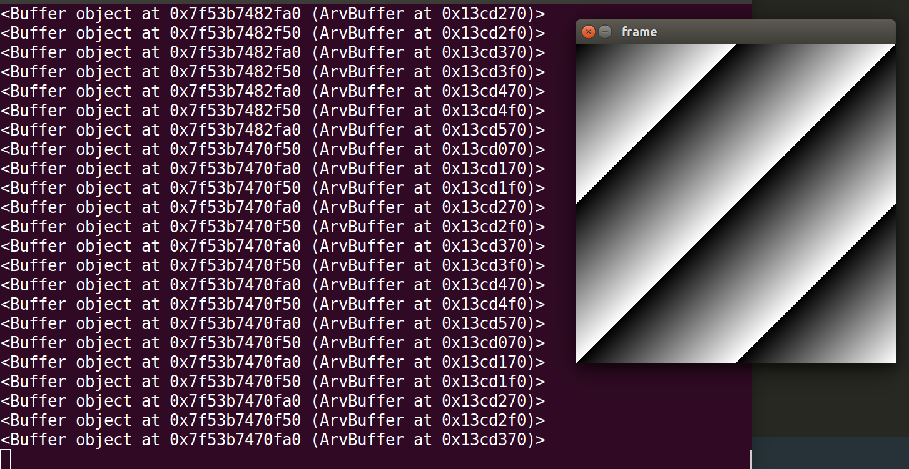
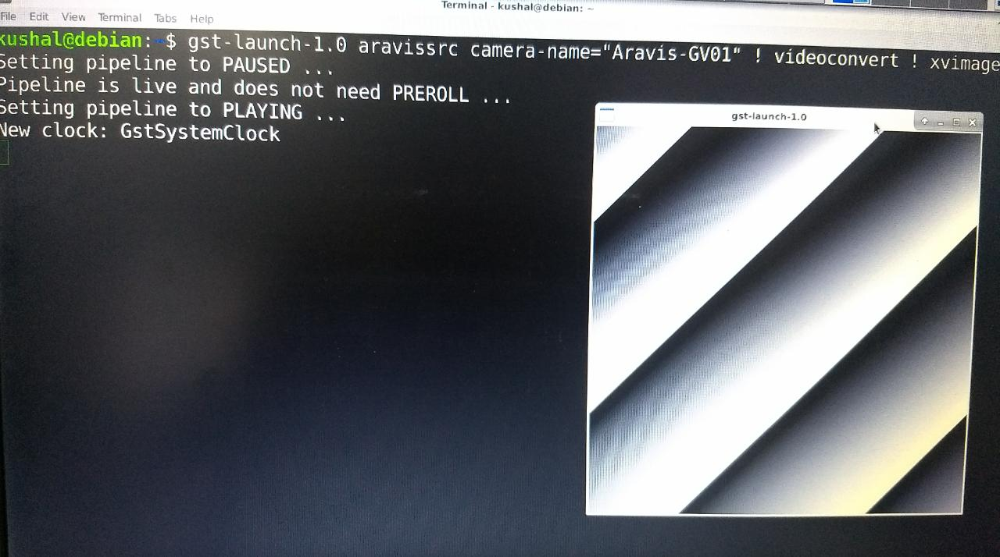

I have written a wrapper for using Aravis with OpenCV’s IplImage or Mat type. Check it out here https://github.com/kushalvyas/Aravis-OpenCV-Wrapper
So I’m working on this awesome vision project and I’m using the Imaging Source’s DML 33GR0134 camera which is POE ! (powered over ethernet). This is cool!. Still I’m using the 12V supply rather than the 48V. Anyway, here’s a tutorial on how to configure these camera for ubuntu. Imaging Source gives Windows softwares and have provided a github repository as well.
https://github.com/TheImagingSource/tiscamera
Here you go!
Now Ill move on to the article. I’ll start with setting up the above repository, followed by tutorials on aravis, and lastly using opencv with it.
Thing covered:
- Setting up
tiscamera(Imaging Source Module) - Setting up
Aravis(Utility for GigE cameras) - Using Aravis :
arv.h - Opencv with Aravis
The camera is a GigE camera ; meaning Gigabit Ethernet Camera. GigE Vision as described on Wiki, is an industrial standard for high performance camera. You can connect multiple cameras over ethernet networks. One of the manufacturers is Imaging Source.
Lets proceed
TISCAMERA¶
This is the The Imaging Source Linux Repository and it has multiple elements such as
- gstreamer elements
- gobject introspection
- uvc extensions
- firmware update tools
- examples on how to interact with your camera
Installing TISCAMERA
All of it is mentioned on the repository’s README. I’m just rewriting it here. these instructions are simply copied from their README.
Firstly, for TISCAMERA , we will need to download the following packages
git cmake pkg-config libudev-dev libtinyxml-dev libgstreamer1.0-dev libglib2.0-dev libgirepository1.0-dev libusb-1.0-0-dev libzip-dev python-setuptools libxml2-dev libaudit-dev libpcap-dev libnotify-dev
you can simply do sudo apt-get install followed by the above list. If some of the packages are unable to get located, just google search with the packages’ name, and you’ll get the alternative.
For Ubuntu 14.04, you can just wrap it up in
# Build dependencies
sudo apt-get install git g++ cmake pkg-config libudev-dev libudev1 libtinyxml-dev libgstreamer1.0-dev libgstreamer-plugins-base1.0-dev libglib2.0-dev libgirepository1.0-dev libusb-1.0-0-dev libzip-dev uvcdynctrl python-setuptools libxml2-dev libpcap-dev libaudit-dev libnotify-dev autoconf intltool gtk-doc-tools
# Runtime dependencies
sudo apt-get install gstreamer1.0-tools gstreamer1.0-x gstreamer1.0-plugins-base gstreamer1.0-plugins-good gstreamer1.0-plugins-bad gstreamer1.0-plugins-ugly libxml2 libpcap0.8 libaudit1 libnotify4
Building TISCAMERA
First , clone the repository
git clone --recursive https://github.com/TheImagingSource/tiscamera.git
cd tiscamera
mkdir build
cd build
Now, we want to build with ARAVIS, because GigE camera’s use ARAVIS. Hence,
# With ARAVIS:
cmake -DBUILD_ARAVIS=ON -DBUILD_GST_1_0=ON -DBUILD_TOOLS=ON -DBUILD_V4L2=ON -DCMAKE_INSTALL_PREFIX=/usr ..
# Without ARAVIS
cmake -DBUILD_ARAVIS=OFF -DBUILD_GST_1_0=ON -DBUILD_TOOLS=ON -DBUILD_V4L2=ON -DCMAKE_INSTALL_PREFIX=/usr ..
make
sudo make install
And that’s all. You have finished installing TISCAMERA and ARAVIS together.
Running the gige-daemon on TISCAMERA
The gige-daemon is a daemon process to check the incoming of the gige camera. Once your TISCAMERA has been installed, goto build/tools/gige-daemon where you can run this process.
<path_to_tiscamera>/build/tools/gige-daemon/./gige-daemon start # this starts the daemon
Configuring a GigE camera for tiscamera:¶
This is W.R.T Imaging Source GigE camera (please check their documentation for more options). We will setup a static IP address over the Ethernet port.
Only after doing this, will you be able to even detect the camera¶
Building ARAVIS (if you have already not done it with TISCAMERA)¶
Clone the repository from https://github.com/AravisProject/aravis
Run ./configure (you can check for options by doing ./configure –help)
Then run make
Eventually make install
And we’re done.
Test it
arv-tool-<version_number> list
This gives you the connected IP camera
Lastly, add this to your profile / bsarhc / or_where_ever_you store your paths
#### aravis exports #####
export GI_TYPELIB_PATH="$GI_TYPELIB_PATH:<path to aravis>/src"
export LD_LIBRARY_PATH="$LD_LIBRARY_PATH:<path to aravis>/src/.libs"
Building ARAVIS with OpenCV¶
This is also as small as the above installation.
- Clone the repository at https://github.com/opencv/opencv. OpenCV has ARAVIS support from version 3.2. You can look at the Changelog (thanks to @ArkadiuszRaj)
- cd <opencv_source_path>
- mkdir build && cd build
- Run CMAKE
cmake -D CMAKE_BUILD_TYPE=RELEASE -D INSTALL_C_EXAMPLES=OFF -D PYTHON_EXECUTABLE=<path_to_python_venv>/aravis_opencv/gige_py/bin/python -D WITH_GSTREAMER=ON -D WITH_ARAVIS=ON ..
Make sure you have a WITH_ARAVIS=ON flag as your CMAKE parameter
- make -j4
- sudo make install / make install (if you plan to link and include opencv with every c/c++ program)
Using ARAVIS standalone¶
/* TEST SETUP FOR CAMERA */
// system and aravis includes
#include "glib.h"
#include "arv.h"
#include <stdlib.h>
#include <signal.h>
#include <stdio.h>
#include <iostream>
int main(){
ArvCamera *camera;
ArvBuffer *buffer;
std::string filename="test.png";
camera = arv_camera_new (argc > 1 ? argv[1] : NULL);
buffer = arv_camera_acquisition (camera, 0);
if (ARV_IS_BUFFER (buffer)){
printf ("Image successfully acquired\n");
arv_save_png(buffer, filename.c_str());
}
else{
printf ("Failed to acquire a single image\n");
}
g_clear_object (&camera);
g_clear_object (&buffer);
return 0;
}
To compile use the following G++ Command
g++ -o main main.cpp -L/usr/lib -L/usr/local/lib -I/home/path_to_installs/gige/utils/aravis/src/ -L/home/path_to_installs/gige/utils/aravis/src/.libs/ -I/usr/include/glib-2.0/ -I/usr/lib/x86_64-linux-gnu/glib-2.0/include -laravis-0.6 -lglib-2.0 -lm -pthread -lgio-2.0 -lgobject-2.0 -lxml2 -lgthread-2.0 -lglib-2.0 -lz -lusb-1.0 -lpng
Using Opencv with ARAVIS¶
If you open opencv’s video I/O source code, you can find the following lines
as seen, the flag is CAP_ARAVIS, which has a value of 2100
/* TEST SETUP FOR CAMERA */
// system and aravis includes
#include "glib.h"
#include "arv.h"
#include <stdlib.h>
#include <signal.h>
#include <stdio.h>
#include <iostream>
// opencv includes
#include "opencv2/opencv.hpp"
int main(){
std::cout << "OpenCV Version : " << CV_VERSION << std::endl ;
printf("Value of CAP_ARAVIS is %d\n", cv::CAP_ARAVIS);
cv::VideoCapture cam; // constant for ARAVIS SDK
cam.open(2100);
std::cout << "Camera Status : " << cam.isOpened() << std::endl;
if(!cam.isOpened()){
printf("Error in opening camera\n");
return 0;
}
cv::namedWindow("frame", 1);
while(true){
cv::Mat frame;
bool ret = cam.read(frame);
cv::imshow("frame", frame);
int ch = cv::waitKey(1) & 0xFF;
if (ch == 27){
break;
}
}
cam.release();
cv::destroyAllWindows();
return 0;
}
Converting ARAVIS Packet to OpenCV Mat/ IPLImage¶
But, there’s is one problem here. There are many places, and even I have personally faced that using VideoCaptures set property methods sometimes don’t yield the desired results. Hence, one can actually set them through Aravis and then use the aravis acquired image through opencv. This is what I’m covering next.
I’ll just use the above code to explain what additions are made
// system and aravis includes
#include "glib.h"
#include "arv.h"
#include <stdlib.h>
#include <signal.h>
#include <stdio.h>
#include <iostream>
// my includes
#include "camera_settings.h"
// awesome github repo for saving aravis buffers to png
// check it out at https://github.com/szmoore/aravis-save-png
#include "save_png.c"
// opencv includes
#include "opencv2/opencv.hpp"
using namespace cv;
using namespace std;
int main (int argc, char **argv){
ArvCamera *camera;
ArvBuffer *buffer;
void *framebuffer;
framebuffer = NULL;
IplImage *frame;
frame = NULL;
camera = arv_camera_new (argc > 1 ? argv[1] : NULL);
/*
Here I am setting gain to 5.85 db
*/
arv_camera_set_gain(camera, 5.85);
buffer = arv_camera_acquisition (camera, 0);
if (ARV_IS_BUFFER (buffer)){
printf ("Image successfully acquired\n");
printf (" Converting Image to MAT\n");
IplImage src;
size_t buffer_size;
framebuffer = (void*)arv_buffer_get_data (buffer, &buffer_size);
cvInitImageHeader( &src, cvSize( 1280, 960 ), IPL_DEPTH_8U, 1, IPL_ORIGIN_TL, 4 );
cvSetData(&src, framebuffer, src.widthStep);
if ( !frame || frame->width != src.width || \
frame->height != src.height || \
frame->depth != src.depth || \
frame->nChannels != src.nChannels) {
cvReleaseImage( &frame );
frame = cvCreateImage( cvGetSize(&src), src.depth, 1 );
}
cvCopy(&src, frame);
cv::Mat m = cv::cvarrToMat(frame);
imshow("frame", m);
waitKey();
destroyAllWindows();
}
else{
printf ("Failed to acquire a single image\n");
}
g_clear_object (&camera);
g_clear_object (&buffer);
return EXIT_SUCCESS;
return 0;
}
In the above code, do check out save_png.c, created by git-@szmoore. This is the repo link : https://github.com/szmoore/aravis-save-png
We’re done with simple connection of camera and single photo capture using Aravis and OpenCv, now’s the time to write a live video preview application. Aravis uses GLIB to manage threading, and handle callbacks. So will we!. We’ll integrate gstreamer, aravis for streaming. Also, feel free to incorporate features like controlling camera properties using a GUI/much like ARAVIS Viewer.
Just an FYI, there are some of the properties one can set using a DMK[A-Za-z0-9]+ camera (yea.. that was regexp :P).
arv_camera_set_region()arv_camera_set_binning()arv_camera_set_pixel_format()arv_camera_set_acquisition_mode()arv_camera_set_frame_count()arv_camera_set_frame_rate()- and many more
It’s just amazing to use Glib. (it’s my first time with using glib)
I’m shifting systems from Ubuntu to Debian. So till then enjoy. Also, Big thanks to THE ARAVIS PROJECT for making our lives easy :)
UPDATED WITH PYTHON-ARARVIS¶
So aravis has beautiful python bindings, making my job a lot lot easier (atleast in the prototyping phase. However, I’ll have to write in bare bones C for deployment on DebianRT. Can’t use python everywhere :P ). Hence I’ll just illustrate a short example on capturing frames with aravis in Python.
Now, you can connect a real camera to the ehternet card, or use the ARV-FAKE-GV-CAM, with the command arv-fake-gv-camera-0.6.
kushal@kushal:~/kushalvyas.github.io$ arv-fake-gv-camera-0.6
And to see the output, use the arv-tool
kushal@kushal:~/kushalvyas.github.io$ arv-tool-0.6
>>> Aravis-GV01 (127.0.0.1)
I’m assuming that the reader has already “build and make” Aravis, so the python bindings are already generated. Also, the gi-repository in python has been installed.
# Ararvis python videcapture
import gi
gi.require("Aravis", "0.6") # or whatever version number you have installed
from gi.repository import Aravis
# other imports
import cv2
import ctypes
import numpy as np
Initializing Aravis, setup Camera, Buffer, and Stream. As seen in the above C code, we had initialized Aravis camera, buffer and stream pointers. We do the same in python.
#continue code from above
Aravis.enable_interface("Fake") # using arv-fake-gv-camera-0.6
camera = Aravis.Camera.new(None)
stream = camera.create_stream (None, None)
payload = camera.get_payload ()
for i in range(0,50):
stream.push_buffer (Aravis.Buffer.new_allocate (payload))
def convert(buf):
''' explained later '''
Moving on, to video capture.
#continue code from above
print "Start acquisition"
camera.start_acquisition()
while True:
buffer = stream.try_pop_buffer()
print buffer
if buffer:
frame = convert(buffer)
stream.push_buffer(buffer) #push buffer back into stream
cv2.imshow("frame", frame)
ch = cv2.waitKey(1) & 0xFF
if ch == 27 or ch == ord('q'):
break
elif ch == ord('s'):
cv2.imwrite("imagename.png",frame)
camera.stop_acquisition()
###################################################################
Output

As seen in the above code snippet, I have used a function convert(buffer). This method converts the Aravis buffer to a numpy array. It’s source can be found at the Python-Aravis binding on github: https://github.com/SintefRaufossManufacturing/python-aravis. However i’ll still put it here. All credits goes to https://github.com/SintefRaufossManufacturing/python-aravis for creating it. Plus, they have awesome examples on their repository, so check it out too.
'''
https://github.com/SintefRaufossManufacturing/python-aravis/blob/master/aravis.py#L181
'''
def convert(buf):
if not buf:
return None
pixel_format = buf.get_image_pixel_format()
bits_per_pixel = pixel_format >> 16 & 0xff
if bits_per_pixel == 8:
INTP = ctypes.POINTER(ctypes.c_uint8)
else:
INTP = ctypes.POINTER(ctypes.c_uint16)
addr = buf.get_data()
ptr = ctypes.cast(addr, INTP)
im = np.ctypeslib.as_array(ptr, (buf.get_image_height(), buf.get_image_width()))
im = im.copy()
return im
Lastly, since I’ll be exploring more of gige cams, using them with Glib / python / opencv / c I’ll keep updating this article continuously with new snippets.
Also, a small trick for OpenCv users. There are many time (even I have faced such) where using the Opencv set property method for VideoCapture objects doesn’t seem to work. One fix that I’ve used is to first use Aravis *camera to set the property as shown above. Then call a g_object_clear(camera), and then call OpenCV’s VideoCapture cam(2100);. The camera inherits the last setting.¶
UPDATE w: Gstreamer GST-Launch¶
I’ll list down the Gstreamer command that can launch Aravis supported cameras. So when you build aravis from source, there will be a folder called gstand gst-0.10 being created . This contains the gstreamer plugin for Aravis cameras.
- aravis root dir
|
| - build ...
| - src ...
| - gst (gstreamer-1.0 plugin)
| - gst-0.10 (gstreamer 0.1 plugin)
| - tools
| - aravis_viewer ( needs gtk-3+, glib and gobject for compiling)
Firstly, make sure Aravis gstremer directories are added to this environment variable GST_PLUGIN_PATH_1_0 (since I use gst-1.0 ) .
And then run the command :
gst-launch-1.0 aravissrc camera-name="Aravis-GV01" ! videoconvert ! xvimagesink
The following output is expected

That’s all for now. Enjoy using gige!
References:¶
[1]. Aravis : https://github.com/AravisProject/aravis
[2]. Save_png.c : https://github.com/szmoore/aravis-save-png
[3]. Python-Aravis Bindings : https://github.com/SintefRaufossManufacturing/python-aravis